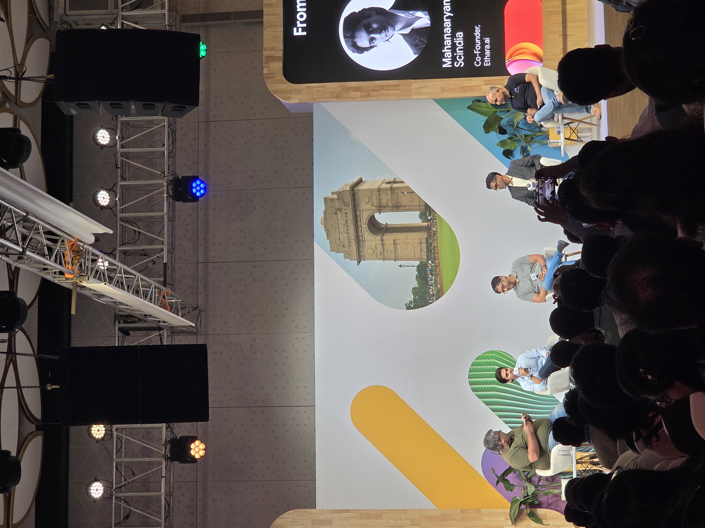
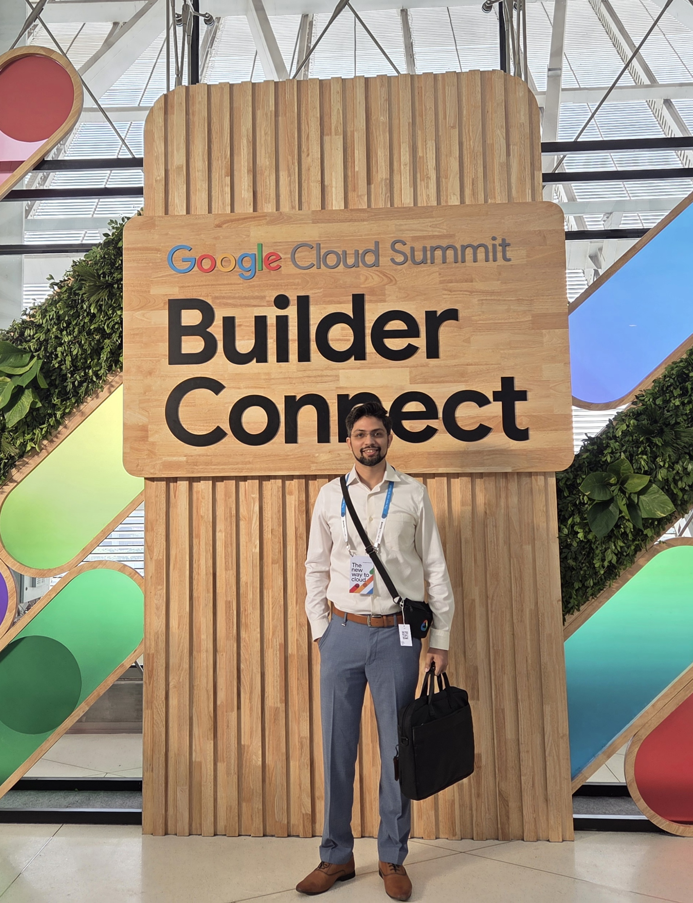
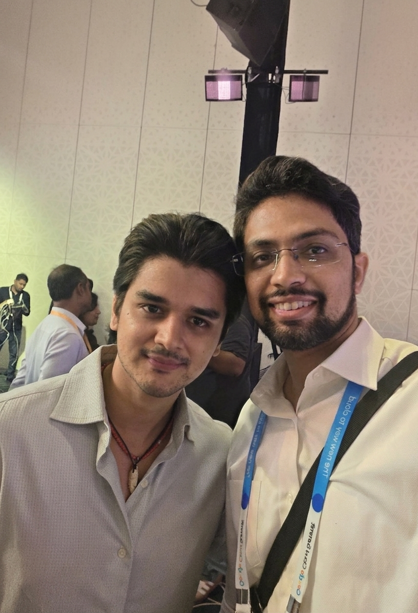
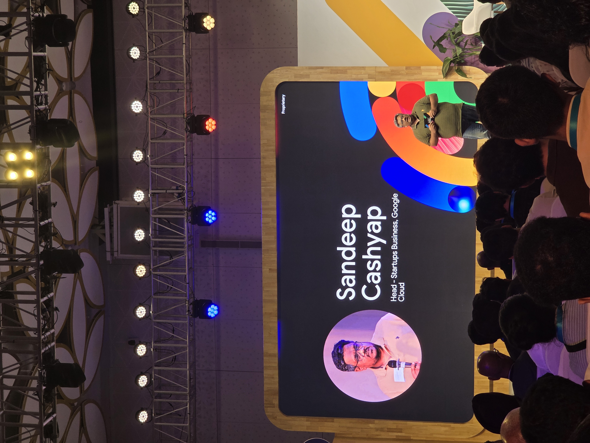

Earlier this month, I attended Google Cloud Summit: Builder Connect at Yashobhoomi, Delhi — a full-day event bringing together developers, founders, enterprise architects, and Google's engineering teams under one roof.
I went in with a simple goal: understand where agent-based AI is actually heading, beyond the hype. What I came back with was sharper than I expected.
The Central Shift: From Assistants to Agents
The theme running through nearly every session was the transition from AI assistants — reactive, question-answering systems — to AI agents that make decisions, execute workflows, and coordinate with other agents autonomously.
This isn't a semantic distinction. It's an architectural one. And the entire industry conversation is now about how to make that transition reliably.

What Stood Out Technically
Three architectural themes came up in almost every serious session:
Grounding over prompting. The teams building production agents have moved past prompt engineering as the primary lever. Schema ontology, query blueprints, and parameterized intent mapping — like the contextSet.json pattern demonstrated in the Swiss Property Search agent — are how you keep LLMs from hallucinating when they touch real business data.
Reliability infrastructure. Supervisor agents that validate outputs before they reach users. Allowlists over blocklists for what agents can do. Human approval gates for high-stakes actions. Idempotency for financial workflows. This is the boring, essential layer that separates a demo from a deployable product.
Decision debugging. Ashok Krish from TCS put it best — engineering has always been about debugging code. Agentic systems require debugging decisions. The transaction succeeded, but was the judgement right? That's a fundamentally different observability problem.

Notable Demonstrations
Swiss Property Search by Kartik Narula and Hardik Gupta showcased how a natural-language real estate query gets grounded through schema ontology, converted to safe SQL, and executed across AlloyDB — with the agent's reasoning fully visible. As someone building in the same space, this was the closest analog to what we're working on.
ARIA Personal Concierge, presented by Abirami Sukumaran and Prashanth Subrahmanyam, showed how multi-domain agents can handle voice, fitness recommendations, dining bookings, and investment queries in a single interface — while scaling elastically across hundreds of serverless instances.
Searce demonstrated compliance and sensitive data protection agents — a genuinely useful pattern for anyone building AI for regulated industries.
Resilience AI presented location-level climate and disaster risk analysis — a good example of how proprietary vertical data becomes the moat, not the AI model itself.

The Gap Nobody Talks About
The most honest observation from the day, made across multiple panels: the tooling is ready. Enterprise adoption isn't.
Large companies remain cautious. The reputational risk of an AI agent making a wrong decision is too high. Most are still in exploratory mode.
That gap — between what AI can technically do today and what businesses actually deploy — is where the real opportunity sits.
The companies that bridge it with safety, evaluation, and compliance layers will define the next era of applied AI.

What I'm Taking Back
For Building10X, the day sharpened several directions:
- Grounding architectures matter more than model choice
- Reliability infrastructure is a product category, not an afterthought
- Vertical domain knowledge remains the defensible edge, not the AI tooling itself
- Agent-to-agent communication (A2A) and MCP are the connective tissue worth learning now
Closing Thought
Events like Builder Connect are useful less for what's announced and more for what's confirmed. The direction is clear. The tools are here. The remaining work is disciplined, patient building — with a serious focus on making AI systems that businesses can actually trust.
That's the work.
Building10X is an AI-accelerated software studio building custom platforms, automation, and AI agents. If any of the technical directions above rhymed with what you're working on — grounding, agent reliability, or vertical AI — I'd like to hear about it.
Start a conversation